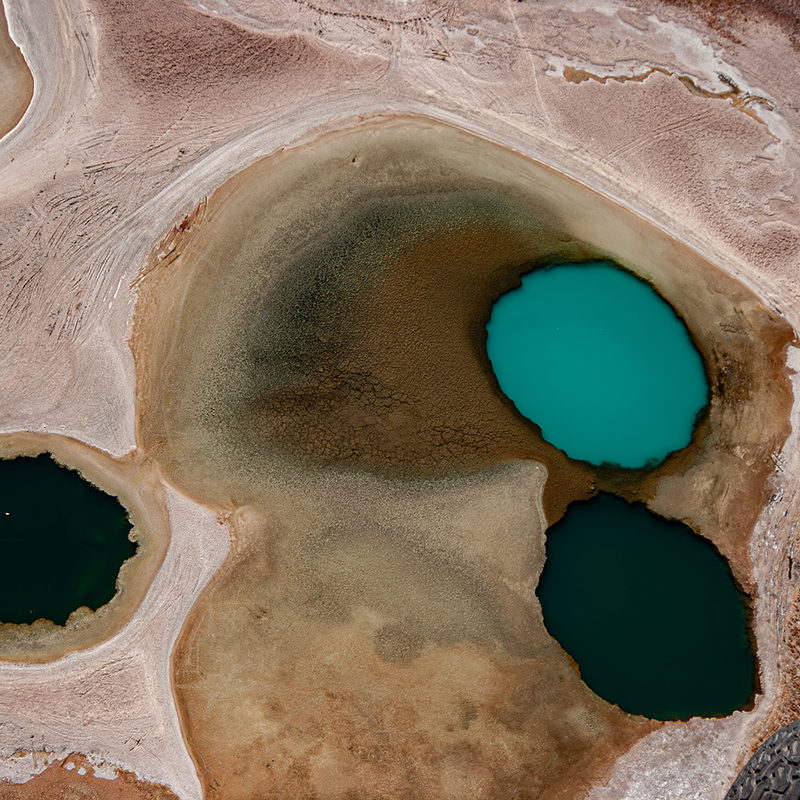
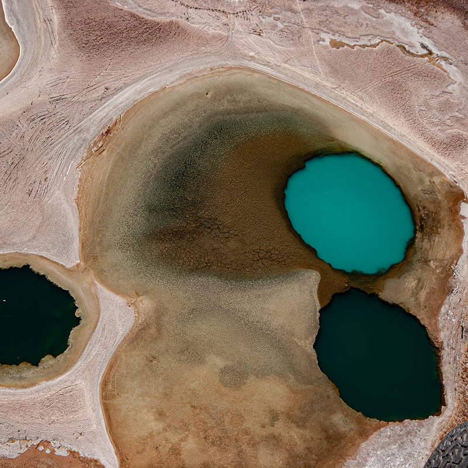

🌊 Vive Volando Nomáde
Fotografía Aérea • Vuelos Paramotor • Talleres Laguna de Junín & Gómez
 [file:48]
[file:48]
Fotografía Aérea • Vuelos Paramotor • Talleres Laguna de Junín & Gómez
[file:48]
 [file:49]
[file:49]
Registramos en alta calidad veleros, ciclismo, natación y eventos deportivos. Desde tierra, agua o aire, Haroldo Horta documenta cada jornada.
[attached_file:1] [file:44]
[file:44]
Despega en paramotor y ultraligero junto a Haroldo Horta. Vuelos de paseo, fotografía aérea y video hasta 8K. ¡El recuerdo perfecto!
[attached_file:1] [file:39]
[file:39]
 [file:43]
[file:43]
Talleres prácticos: composición, luz amanecer/atardecer, teleobjetivos y cámaras de acción en terreno real de la laguna.
[attached_file:1] [file:41]
[file:41]
 [file:40]
 [file:42]
[file:40]
 [file:42]
 [file:45]
[file:45]
 [file:47]
[file:47]
 [file:46]
[file:46]